Kripto ve para, uygulanabilir hâle getirildi
سواد مالی و کریپتو، کاربردیBlokzincirler nasıl çalışır, bir token'a dokunmadan önce nasıl kontrol edilir ve dolandırıcılıklardan nasıl korunulur.
 تصویرسازی
تصویرسازی
با هم، از بازار و کریپتو تا نوآوری و دستاوردهای ایرانیان را دنبال میکنیم.


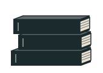


Yapay zekâ, kuantum ve çipler için 50 milyar euroya kadar hedefleyen bir fon ve bir Kuantum Yasası. Öncekilerle karşılaştırması, kimin kazandığı ve Avrupa’da en çok nerede işe yaradığı.
صندوق STEF و قانون کوانتوم: مقایسه با برنامههای قبلی، ذینفعان و مناطقی که بیشتر میبرند.
Haberi oku

Devletin elindeki yaklaşık 306.800 BTC’yi 20 yıl kilitleyen tasarı Temsilciler Meclisi genel kuruluna geldi. Hiçbir alım içermiyor ve zaman dar.
طرح قفل ۲۰ سالهی حدود ۳۰۶ هزار بیتکوین دولت آمریکا به صحن رسید؛ خریدی در آن نیست و وقت کم است.
Haberi oku

Babek Zencani’nin coini 30 Kasım’da işlem görmeye başlıyor. Yaptırımlar, yurt içi lisans yok ve likidite zayıf: uygulanabilir mi, güvenilir mi, alınıp satılabilir mi?
معاملات از ۹ آذر؛ تحریم، نبود مجوز و نقدینگی کم. شدنی است، اعتبار دارد و کجا معامله میشود؟
Haberi oku

Dijital hizmetler dünya hizmet ihracatının %56'sı. Hangi alanlar kazandırıyor, müşteri nerede bulunur, para gerçekte nasıl alınır ve tüm bunlar ne kadar gerçekçi.
بازار، ۱۶ حوزه، مشترییابی، اینترنت، تحریمها و راههای دریافت پول؛ و اینکه چقدر واقعی است.
Haberi oku

Şimdiye kadar bir yapay zekâ işten çıkarma dalgası yok, ama görevler ve yeni başlayanların giriş yolu değişiyor. Bu yılın kanıtları ne diyor ve değişim nasıl okunmalı.
اخراج گستردهای نیست، ولی وظیفهها و راه ورود تازهکارها عوض میشود. شواهد امسال و راه درست فهمیدن تغییر.
Haberi oku

“Hazine hacklendi” viral oldu. FinCEN, yetkisiz erişimin sistemlerinin sınırlı bir bölümüne ulaştığını söylüyor. Neler doğrulandı, neler doğrulanmadı ve bu tür başlıklar nasıl okunmalı.
«خزانهداری هک شد» وایرال شد. FinCEN از دسترسی غیرمجاز به بخش محدودی از سامانههایش میگوید. چه چیزی تأیید شده و چه چیزی نه؟
Haberi oku

Bitcoin yeniden 60.000 doların altında, ETF'ler para kaybediyor ve korku 11'de. Önümüzdeki hafta için üç senaryo ve önemli olan tek rapor.
بیتکوین دوباره زیر ۶۰ هزار دلار است، ETFها پول از دست میدهند و ترس روی ۱۱ است. سه سناریو برای هفتهی آینده.
Haberi oku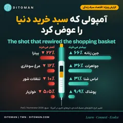

Zayıflama ilaçları parayı cips ve pizzadan proteine, giyime ve sağlığa kaydırıyor. Zarar ne kadar büyük, yeni pazarlar nerede ve İran nerede duruyor?
داروهای لاغری پول را از چیپس و پیتزا به پروتئین، پوشاک و سلامت میبرند. آسیب چقدر است، بازار تازه کجاست و ایران کجا ایستاده؟
Haberi oku

Circle ve Paribu mutabakat zaptı imzaladı: dijital dolar nasıl çalışır, Türkiye’nin %85 enflasyondan çıkardığı ders, İran’ın konumu ve önümüzdeki işler.
تفاهمنامهی Circle و Paribu: سازوکار دلار دیجیتال، درس ترکیه از تورم ۸۵ درصدی، جایگاه ایران و فرصتهای شغلی.
Haberi oku

Arak Üniversitesi’nin magnezyum ve grafen oksit kemik iskelesi: laboratuvar sonuçları, Almanya ve Kore’nin pazara nasıl ulaştığı, İran’ın alandaki 5. sırası ve ameliyathaneye giden yol.
داربست منیزیم و گرافن اکسید دانشگاه اراک: نتایج آزمایشگاهی، تجربهی آلمان و کره، رتبهی پنجم ایران و راه تا اتاق عمل.
Haberi oku

Uzun vadeli ısınmanın üstüne çok güçlü bir El Niño, 2027'yi rekor yıl yapabilir. Gıda fiyatları, elektrik, su ve İran için ne anlama geliyor.
النینوی بسیار قوی روی گرمایش بلندمدت ممکن است ۲۰۲۷ را سال رکورد کند. اثرش بر قیمت غذا، برق، آب و ایران.
Haberi oku

Rusya, Suudi Arabistan ve Avustralya tarihin en büyük CO2 ihracatçıları; İran beşinci. Para, işler, hukuk ve mevcut iklim kurallarının bunu neden neredeyse hiç saymadığı.
روسیه، عربستان و استرالیا بزرگترین صادرکنندگان کربن تاریخاند و ایران پنجم. پول، شغل، قانون و اینکه چرا قوانین فعلی تقریباً آن را حساب نمیکنند.
Haberi oku

Dijital çeklerin nasıl çalıştığı, merkez bankasının %80 elektronik paya yol haritası, Hong Kong, Singapur, Hindistan ve İngiltere'den dersler ve güvenli kullanım.
چک دیجیتال چطور کار میکند، نقشهی راه بانک مرکزی تا سهم ۸۰ درصدی، تجربهی هنگکنگ، سنگاپور، هند و بریتانیا و راهنمای استفادهی امن.
Haberi oku

Meşhed'in ilk 6,6 kW'lık santralinden yılda 396 TWh'ye: tarih, kapasite, şebeke, yaptırımlar, çevre, gelecek ve 15 komşuyla 40 yıllık karşılaştırma.
از نیروگاه ۶٫۶ کیلوواتی مشهد تا ۳۹۶ میلیارد کیلوواتساعت: تاریخچه، ظرفیت، شبکه، تحریم، محیط زیست، آینده و مقایسه با ۱۵ همسایه.
Haberi oku
Güney Kore bankalarına yönelik gerçek saldırılarda kullanılan bir güvenlik testi aracı: FBI, CrowdStrike ve Check Point'in doğruladıkları, henüz kanıtlanmamış olanlar ve ne yapmalı.
ابزار آزمایش امنیت که در حملهی واقعی به بانکهای کره به کار رفت: آنچه FBI و CrowdStrike تأیید کردهاند، آنچه هنوز ثابت نشده و چه باید کرد.
Haberi oku
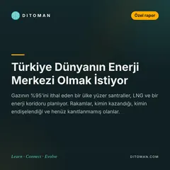
Gazının %95'ini ithal eden bir ülke yüzer santraller, LNG ve bir enerji koridoru planlıyor. Rakamlar, kimin kazandığı, kimin endişelendiği ve henüz kanıtlanmamış olanlar.
کشوری که ۹۵٪ گازش وارداتی است، با نیروگاه شناور، LNG و کریدور برق میخواهد هاب شود. ارقام، برندگان، نگرانیها و آنچه هنوز ثابت نشده.
Haberi oku
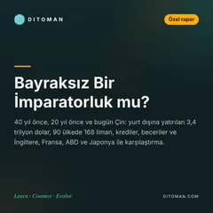
40 yıl önce, 20 yıl önce ve bugün Çin: yurt dışına yatırılan 3,4 trilyon dolar, 90 ülkede 168 liman, krediler, beceriler ve İngiltere, Fransa, ABD ve Japonya ile karşılaştırma.
چین ۴۰ سال پیش، ۲۰ سال پیش و امروز: ۳٫۴ تریلیون دلار سرمایهگذاری خارجی، ۱۶۸ بندر در ۹۰ کشور، وام، مهارت و مقایسه با بریتانیا، فرانسه، آمریکا و ژاپن.
Haberi oku
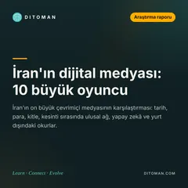
İran'ın on büyük çevrimiçi medyasının karşılaştırması: tarih, para, kitle, kesinti sırasında ulusal ağ, yapay zekâ ve yurt dışındaki okurlar.
ده رسانه از نُه زاویه: تاریخچه، پول، مخاطب، شبکهی ملی در روزهای قطع اینترنت، هوش مصنوعی و خوانندهی خارج از ایران.
Haberi oku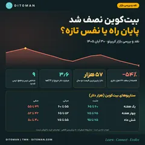
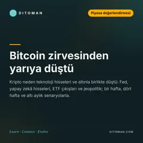
Kripto neden teknoloji hisseleri ve altınla birlikte düştü: Fed, yapay zekâ hisseleri, ETF çıkışları ve jeopolitik; bir hafta, dört hafta ve altı aylık senaryolarla.
چرا کریپتو همزمان با سهام فناوری و طلا ریخت؛ با سناریوهای مثبت و منفی برای یک هفته، چهار هفته و شش ماه.
Haberi oku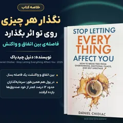
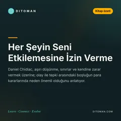
Daniel Chidiac, aşırı düşünme, sınırlar ve kendine zarar vermek üzerine; olay ile tepki arasındaki boşluğun para kararlarında neden önemli olduğunu anlatıyor.
کتاب دنیل چیدیاک دربارهی بیشفکری، مرزبندی و خودتخریبی؛ و اینکه چرا فاصلهی بین اتفاق و واکنش در پول هم مهم است.
Haberi oku
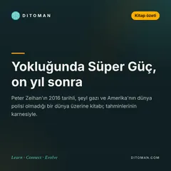
Peter Zeihan'ın 2016 tarihli, şeyl gazı ve Amerika'nın dünya polisi olmadığı bir dünya üzerine kitabı; tahminlerinin karnesiyle.
کتاب پیتر زایهان دربارهی انقلاب شیل و جهانی بدون پلیس آمریکا، با کارنامهی پیشبینیهایش تا امروز.
Haberi oku
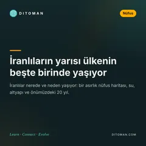
İranlılar nerede ve neden yaşıyor: bir asırlık nüfus haritası, su, altyapı ve önümüzdeki 20 yıl.
مردم ایران کجا زندگی میکنند و چرا: صد سال نقشهی جمعیت، نقش آب، زیرساختها و ۲۰ سال آینده.
Haberi oku
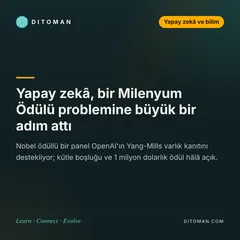
Nobel ödüllü bir panel OpenAI'ın Yang-Mills varlık kanıtını destekliyor; kütle boşluğu ve 1 milyon dolarlık ödül hâlâ açık.
تأیید اثبات هوش مصنوعی برای وجود نظریهی یانگ–میلز؛ شکاف جرمی و جایزهی یک میلیون دلاری هنوز باز است.
Haberi oku
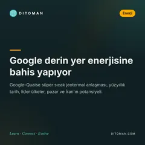
Google–Quaise süper sıcak jeotermal anlaşması, yüzyıllık tarih, lider ülkeler, pazar ve İran'ın potansiyeli.
قرارداد گوگل و Quaise، فناوری زمینگرمایی فوقداغ، تاریخچه، بازار و ظرفیت ایران از مشکینشهر تا دماوند.
Haberi oku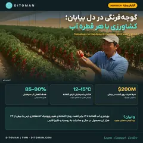
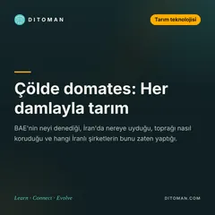
BAE'nin neyi denediği, İran'da nereye uyduğu, toprağı nasıl koruduğu ve hangi İranlı şirketlerin bunu zaten yaptığı.
آزمایشهای امارات، کاربرد در مناطق خشک ایران، حفاظت از خاک و شرکتهای ایرانی فعال در کشت هوشمند.
Haberi oku
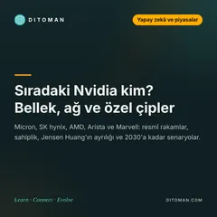
Micron, SK hynix, AMD, Arista ve Marvell: resmî rakamlar, sahiplik, Jensen Huang'ın ayrılığı ve 2030'a kadar senaryolar.
مایکرون، اسکی هاینیکس، AMD، آریستا و مارول: ارقام رسمی به دلار و تومان، مالکیت، کنارهگیری جنسن هوانگ و سناریوها.
Haberi oku
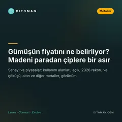
Sanayi ve piyasalar: kullanım alanları, açık, 2026 rekoru ve çöküşü, altın ve diğer metaller, görünüm.
صنعت در برابر بازار: کاربردها، کسری بازار، رکورد و سقوط ۲۰۲۶، مقایسه با طلا و چشمانداز آینده.
Haberi oku
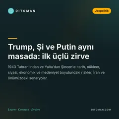
1943 Tahran'ından ve Yalta'dan Şincen'e: tarih, nükleer, siyasi, ekonomik ve medeniyet boyutundaki riskler, İran ve önümüzdeki senaryolar.
از تهران ۱۹۴۳ و یالتا تا شنژن: تاریخ، ابعاد هستهای، سیاسی، اقتصادی و تمدنی، جایگاه ایران و سناریوهای پیش رو.
Haberi oku
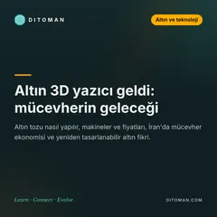
Altın tozu nasıl yapılır, makineler ve fiyatları, İran'da mücevher ekonomisi ve yeniden tasarlanabilir altın fikri.
پودر طلا چطور ساخته میشود، دستگاهها و قیمتها، اقتصاد جواهر در ایران و ایدهی طلای قابلبازطراحی.
Haberi oku
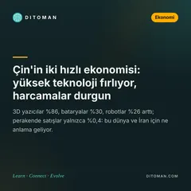
3D yazıcılar %86, bataryalar %30, robotlar %26 arttı; perakende satışlar yalnızca %0,4: bu dünya ve İran için ne anlama geliyor.
چاپگر سهبعدی ۸۶٪، باتری ۳۰٪، ربات ۲۶٪؛ در حالی که خردهفروشی فقط ۰٫۴٪ رشد کرد.
Haberi oku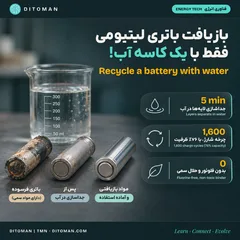
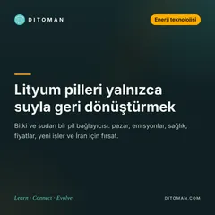
Bitki ve sudan bir pil bağlayıcısı: pazar, emisyonlar, sağlık, fiyatlar, yeni işler ve İran için fırsat.
چسب باتری از گیاه و آب: بازار، گازهای گلخانهای، سلامت، قیمت، کسبوکارهای تازه و فرصت ایران.
Haberi oku
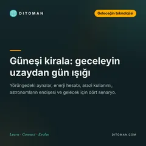
Yörüngedeki aynalar, enerji hesabı, arazi kullanımı, astronomların endişesi ve gelecek için dört senaryo.
آینههای فضایی، حساب انرژی، کاربری زمین، نگرانی اخترشناسان و چهار سناریو برای آینده.
Haberi oku
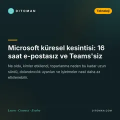
Ne oldu, kimler etkilendi, toparlanma neden bu kadar uzun sürdü, dolandırıcılık uyarıları ve işletmeler nasıl daha az etkilenebilir.
چه اتفاقی افتاد، چه کسانی آسیب دیدند، چرا بازیابی طول کشید، هشدار کلاهبرداری و درسها برای کسبوکارها.
Haberi oku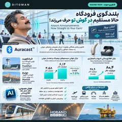
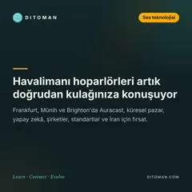
Frankfurt, Münih ve Brighton'da Auracast, küresel pazar, yapay zekâ, şirketler, standartlar ve İran için fırsat.
Auracast در فرانکفورت، مونیخ و برایتون، بازار جهانی، هوش مصنوعی، شرکتها، استانداردها و فرصت صنعت صوت ایران.
Haberi oku
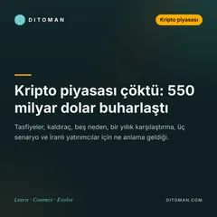
Tasfiyeler, kaldıraç, beş neden, bir yıllık karşılaştırma, üç senaryo ve İranlı yatırımcılar için ne anlama geldiği.
لیکوئیدیشن و اهرم، پنج دلیل سقوط، مقایسه با یک سال پیش، سه سناریوی آینده و اثر بر سرمایهگذار ایرانی.
Haberi oku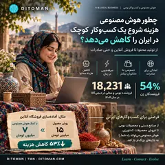
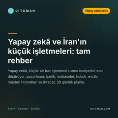
Yapay zekâ, küçük bir İran işletmesi kurma maliyetini nasıl düşürüyor: pazarlama, içerik, muhasebe, hukuk, evrak, müşteri hizmetleri ve ihracat; 30 günlük planla.
هوش مصنوعی در بازاریابی، محتوا، حسابداری، امور حقوقی، مدارک، خدمات مشتری و صادرات؛ با حسابوکتاب واقعی و برنامهی ۳۰ روزه.
Haberi oku
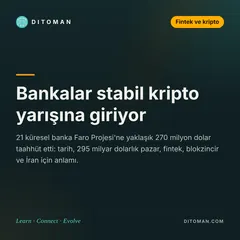
21 küresel banka Faro Projesi'ne yaklaşık 270 milyon dolar taahhüt etti: tarih, 295 milyar dolarlık pazar, fintek, blokzincir ve İran için anlamı.
۲۱ بانک بزرگ جهان با حدود ۲۷۰ میلیون دلار وارد بازار استیبلکوین شدند: تاریخچه، بازار ۲۹۵ میلیارد دلاری، فینتک، بلاکچین و معنای آن برای ایران.
Haberi oku
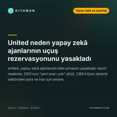
United, yapay zekâ ajanlarının bilet almasını yasakladı: resmî nedenler, CEO'nun "yeni aracı yok" sözü, 1,165 trilyon dolarlık sektördeki para ve İran için anlamı.
یونایتد خرید بلیت با هوش مصنوعی را ممنوع کرد: دلایل رسمی، «واسطهی تازه نمیخواهم»، اعداد صنعت ۱٫۱۶۵ تریلیون دلاری و فرصتها برای ایران.
Haberi oku
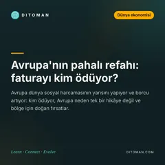
Avrupa dünya sosyal harcamasının yarısını yapıyor ve borcu artıyor: kim ödüyor, Avrupa neden tek bir hikâye değil ve bölge için doğan fırsatlar.
اروپا نیمی از هزینهی اجتماعی جهان را خرج میکند: چه کسی میپردازد، چرا همهی اروپا یکی نیست و چه فرصتهایی برای منطقه ساخته میشود.
Haberi oku
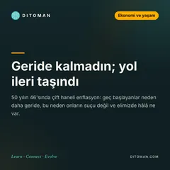
50 yılın 46'sında çift haneli enflasyon: geç başlayanlar neden daha geride, bu neden onların suçu değil ve elimizde hâlâ ne var.
تورم دو رقمی در ۴۶ سال از ۵۰ سال: چرا دیر رسیدن گران است، چرا تقصیر تو نیست و چه چیزی هنوز در اختیار ماست.
Haberi oku
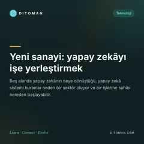
Beş alanda yapay zekânın neye dönüştüğü, yapay zekâ sistemi kuranlar neden bir sektör oluyor ve bir işletme sahibi nereden başlayabilir.
هوش مصنوعی در پنج حوزه چه چیزی را به چه تبدیل میکند و یک تاجر یا کارخانهدار ایرانی از کجا شروع کند.
Haberi oku
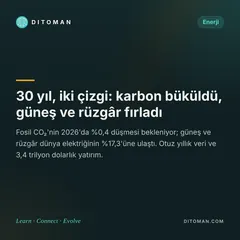
Fosil CO₂'nin 2026'da %0,4 düşmesi bekleniyor; güneş ve rüzgâr dünya elektriğinin %17,3'üne ulaştı. Otuz yıllık veri ve 3,4 trilyon dolarlık yatırım.
انتشار کربن فسیلی در ۲۰۲۶ کم میشود و خورشید و باد به ۱۷٫۳٪ برق جهان رسیدهاند؛ سی سال داده و ۳٫۴ تریلیون دلار سرمایهگذاری.
Haberi oku
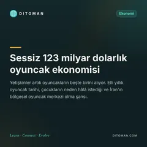
Yetişkinler artık oyuncakların beşte birini alıyor. Elli yıllık oyuncak tarihi, çocukların neden hâlâ istediği ve İran'ın bölgesel oyuncak merkezi olma şansı.
بزرگسالها حالا یکپنجم خریداران اسباببازیاند؛ ۵۰ سال تاریخ اسباببازی و فرصت ایران در بازار منطقه.
Haberi oku
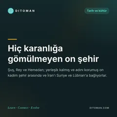
Şuş, Rey ve Hemedan; yerleşik kalmış ve adını korumuş on kadim şehir arasında ve İran'ı Suriye ve Lübnan'a bağlıyorlar.
شوش، ری و همدان در میان ده شهر کهنیاند که هزاران سال مسکونی ماندهاند و نامشان را نگه داشتهاند.
Haberi oku
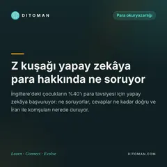
İngiltere'deki çocukların %40'ı para tavsiyesi için yapay zekâya başvuruyor: ne soruyorlar, cevaplar ne kadar doğru ve İran ile komşuları nerede duruyor.
۴۰٪ بچههای بریتانیایی سؤال پولی را از هوش مصنوعی میپرسند: چه میپرسند، جوابها چقدر درست است و ایران و همسایهها کجا هستند.
Haberi oku
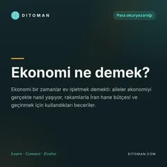
Ekonomi bir zamanlar ev işletmek demekti: aileler ekonomiyi gerçekte nasıl yaşıyor, rakamlarla İran hane bütçesi ve geçinmek için kullandıkları beceriler.
اقتصاد از اول یعنی ادارهی خانه: دخل و خرج خانوار ایرانی با عدد و مهارتهایی که خانوادهها با آن از پس زندگی برمیآیند.
Haberi oku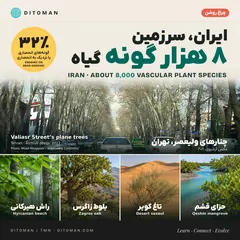
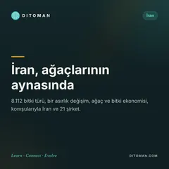
8.112 bitki türü, bir asırlık değişim, ağaç ve bitki ekonomisi, komşularıyla İran ve 21 şirket.
۸٬۱۱۲ گونهی گیاهی، صد سال تغییر، اقتصاد درخت و گیاه، مقایسه با همسایهها و ۲۱ شرکت.
Haberi oku
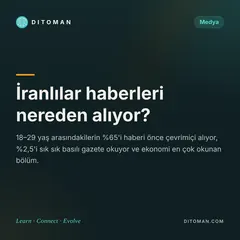
18–29 yaş arasındakilerin %65'i haberi önce çevrimiçi alıyor, %2,5'i sık sık basılı gazete okuyor ve ekonomi en çok okunan bölüm.
۶۵٪ جوانها خبر را اول آنلاین میگیرند، ۲٫۵٪ اغلب روزنامهی کاغذی میخوانند و اقتصاد پرخوانندهترین صفحه است.
Haberi oku
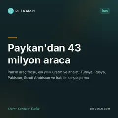
İran'ın araç filosu, elli yıllık üretim ve ithalat; Türkiye, Rusya, Pakistan, Suudi Arabistan ve Irak ile karşılaştırma.
ناوگان ایران، ۵۰ سال تولید و واردات، و مقایسه با ترکیه، روسیه، پاکستان، عربستان و عراق.
Haberi oku
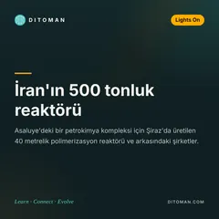
Asaluye'deki bir petrokimya kompleksi için Şiraz'da üretilen 40 metrelik polimerizasyon reaktörü ve arkasındaki şirketler.
راکتور پلیمریزاسیون ۴۰ متری ساخت شیراز برای عسلویه، و شرکتهایی که پشت آناند.
Haberi oku
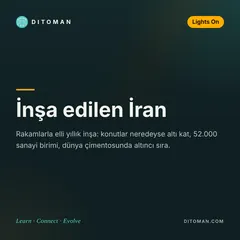
Rakamlarla elli yıllık inşa: konutlar neredeyse altı kat, 52.000 sanayi birimi, dünya çimentosunda altıncı sıra.
۵۰ سال ساختن با عدد: خانهها نزدیک ۶ برابر، ۵۲ هزار واحد صنعتی، ششمِ جهان در سیمان.
Haberi oku
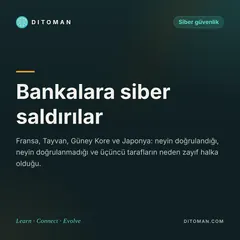
Fransa, Tayvan, Güney Kore ve Japonya: neyin doğrulandığı, neyin doğrulanmadığı ve üçüncü tarafların neden zayıf halka olduğu.
فرانسه، تایوان، کره و ژاپن: چه تأیید شده، چه نه، و چرا شرکتهای همکار حلقهی ضعیفاند.
Haberi oku
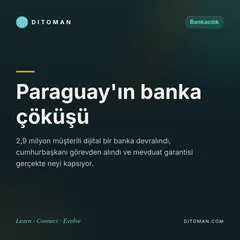
2,9 milyon müşterili dijital bir banka devralındı, cumhurbaşkanı görevden alındı ve mevduat garantisi gerçekte neyi kapsıyor.
بانکی با ۲٫۹ میلیون مشتری بسته شد و رئیسجمهور برکنار شد؛ ضمانت سپرده واقعاً چه چیزی را پوشش میدهد؟
Haberi oku
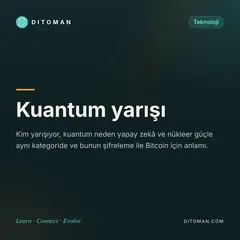
Kim yarışıyor, kuantum neden yapay zekâ ve nükleer güçle aynı kategoride ve bunun şifreleme ile Bitcoin için anlamı.
چه کشورهایی در این مسابقهاند و چه اثری بر رمزنگاری و بیتکوین دارد.
Haberi oku
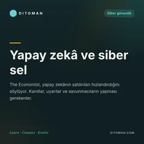
The Economist, yapay zekânın saldırıları hızlandırdığını söylüyor. Kanıtlar, uyarılar ve savunmacıların yapması gerekenler.
شواهد، هشدارها و کاری که مدافعان باید بکنند.
Haberi oku
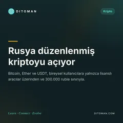
Bitcoin, Ether ve USDT, bireysel kullanıcılara yalnızca lisanslı aracılar üzerinden ve 300.000 ruble sınırıyla.
سه رمزارز برای مردم عادی، فقط از راه واسطههای مجاز و با سقف سالانه.
Haberi oku
Üreticiler neden bazen elektriği satmak için para ödüyor ve faturanız neden negatif olmuyor.
چرا تولیدکننده برای فروش برق پول میدهد و چرا قبض تو منفی نمیشود.
Haberi oku
Klonlanmış ses ve yüzler kullanıldığı iddia edilen 129 milyon dolarlık bir dolandırıcılık davası ve kendinizi korumak için üç kural.
پروندهی ۱۲۹ میلیون دلاری با جعل صدا و تصویر، و سه قانون ساده برای محافظت.
Haberi oku
İranlı bir cerrahi robot: neler belgelenmiş, neler hâlâ üreticinin iddiası.
از دانشگاه تا اتاق عمل؛ آنچه مستند است و آنچه هنوز ادعای سازنده است.
Haberi oku
İranlı bir yapay zekâ ayıklama sistemi, asırlık bir ihracat ticaretiyle buluşuyor.
سامانهی هوشمند غربالگری آفلاتوکسین و جایگاه پستهی ایران در جهان.
Haberi oku
Dışarı çıkmak enflasyonun %20 üzerinde pahalılaştı, ama ücretsiz buluşmalar da azaldı.
گرانی تنها مقصر نیست؛ حتی دورهمی رایگان هم کم شد.
Haberi oku
Yezd'deki tek bir yatakta, tüm Peru'nun rezervleri kadar çinko var.
ذخیرهای در دل کویر یزد، هماندازهی ذخایر روی کشور پرو.
Haberi oku
İran'da üretilen bir EO katalizörü artık Morvarid Petrokimya'nın glikol ünitesini tam kapasiteyle çalıştırıyor.
کاتالیست ایرانی EO، واحد گلایکول پتروشیمی مروارید را با ظرفیت کامل میچرخاند.
Haberi oku
CinnaGen, Zandoriah için AB pazarlama izni nasıl aldı.
داستان مجوز اروپایی داروی زاندوریا، ساخت سیناژن.
Haberi oku
Neler yapabiliyor, kimler kullanabiliyor ve İranlılar ondan ne öğrenebilir.
چه میکند، چه کسانی از آن استفاده میکنند و چه درسی برای ما دارد.
Haberi oku۳۰ درس کوتاه و دوزبانه، قدمبهقدم: از پول و تورم تا بانک، بلاکچین و هوش مصنوعی.30 kısa, iki dilli ders, adım adım: paradan ve enflasyondan bankalara, blok zincirine ve yapay zekâya.
Üçünde de tek, kalıcı bir yayın kuralı: gerçek bilgi ve gerçek başarı; hiçbir taraftan siyasi yorum yok.
Blokzincirler nasıl çalışır, bir token'a dokunmadan önce nasıl kontrol edilir ve dolandırıcılıklardan nasıl korunulur.
Gelmekte olan değişimlerin dürüst analizi; okurlarımızın gerçekten durduğu yerden okunuyor.
İranlıların ve işletmelerin ne inşa ettiğini belgeliyoruz; her rakamın bir kaynağı var.
İran'da neyin üretildiğinin, çıkarıldığının, taşındığının ve görüldüğünün yapılandırılmış haritası: altı kol, resmî alt kolları, öncü şirketler ve her rakam için bir kaynak.


Tarih, ürünler, liderlik ve rakamlar, sektör sektör, her rakam için bir kaynakla.
Farsça konuşanlar için Android uygulama mağazası; 500.000+ uygulama
فروشگاه برنامهی اندروید برای فارسیزبانان؛ بیش از ۵۰۰ هزار برنامه
Kaydı görBiyobenzer ilaçlar, laboratuvar reaktifleri ve rekombinant proteinler
داروهای زیستیمشابه، معرفهای آزمایشگاهی و پروتئینهای نوترکیب
Kaydı görİran e-ticareti; 2006'dan beri
بزرگترین فروشگاه اینترنتی ایران؛ از ۲۰۰۶
Kaydı görASIC, SoC ve FPGA tasarımı; 32 bit Aristo mikroişlemcisi
طراحی تراشهی ASIC، SoC و FPGA؛ ریزپردازندهی ۳۲ بیتی آریستو
Kaydı görSina Robotik Cerrahi Sistemi
سامانهی جراحی رباتیک سینا
Kaydı görSabit fiyatlı araç çağırma; Şubat 2014'te başladı
درخواست خودرو؛ قیمت از پیش مشخص؛ آغاز فوریهی ۲۰۱۴
Kaydı görKraft ve yarı kraft kâğıt, oluklu mukavva ve koliler, karton; Yezd Sanayi Sitesi
کاغذ کرافت و سمیکرافت، ورق و کارتن کنگرهای، مقوا؛ شهرک صنعتی یزد
Kaydı gör
İran'ın en büyük etilen ve polietilen üreticilerinden biri, Asaluye'de, üretimin %70'inden fazlasını ihraç ediyor
یکی از بزرگترین تولیدکنندگان اتیلن و پلیاتیلن ایران در عسلویه؛ بیش از ۷۰٪ محصول برای صادرات
Kaydı görKaplamalı MDF levhalar ve profiller, PVC duvar panelleri, yapay taş, tavan levhaları; Enzeli Serbest Bölgesi, Gilan
ورق و پروفیل امدیاف روکشدار، دیوارپوش پیویسی، سنگ مصنوعی و تایل سقفی؛ منطقه آزاد انزلی، گیلان
Kaydı görBitkisel ilaçlar, kozmetik, gıda ürünleri ve uçucu yağlar; Kaşan, İsfahan (tesis Kamsar yakınında)
داروی گیاهی، آرایشی و غذایی بر پایهی گیاهان دارویی؛ اسانس؛ کاشان، اصفهان (کارخانه نزدیک قمصر)
Kaydı görKâğıt hamuru ve kâğıt; Gilan
خمیر کاغذ و کاغذ؛ گیلان
Kaydı görGül suyu, bitkisel damıtıklar, doğal şuruplar ve kurutulmuş bitkiler; Emirkebir 1 Sanayi Sitesi, Kaşan
گلاب، عرقیات گیاهی، شربت طبیعی و گیاهان دارویی خشک؛ شهرک صنعتی امیرکبیر ۱، کاشان
Kaydı gör«بیسوادان قرن بیستویکم کسانی نیستند که نمیتوانند بخوانند؛ کسانیاند که نمیتوانند یاد بگیرند، از یاد ببرند و دوباره یاد بگیرند.»
“21. yüzyılın cahilleri okuyup yazamayanlar değil, öğrenemeyenler, öğrendiğini unutamayanlar ve yeniden öğrenemeyenler olacak.”
Ditoman adını, İran parasının gündelik adı olan Toman'dan alır: bir "dijital Toman". TMN, Şubat 2022'de BNB Smart Chain üzerinde yayına alındı ve arkasında tek bir soru vardı: bilginin kendisi gerçek bir değer taşıyabilir mi?
Neredeyse dört yıl boyunca bilerek sessiz kaldık. Pazarlama yok, token satışı yok, lansman yok. Bu geçmiş zincir üzerinde, herkesin kontrol edebileceği şekilde duruyor ve bunun hızlı bir pompa için kurulmadığının en net işareti.
Konuya göre kısa dersler, her biri yaklaşık beş dakika, iki dilde ve her biri bir sınavla bitiyor.

Merkez bankası dijital paraları ve programlanabilir para: gerçek olan, abartılan ve İran'ın dijital riyalinin durumu.
Dersi okuDersler, kısa haber açıklamaları ve güncellemeler; Farsça ve İngilizce. Sinyal yok, abartı yok.
TMN, Ditoman'ın arkasındaki BEP-20 tokenıdır ve gerçek öğrenmeyi ve katkıyı tanımak için planlanmıştır. Yatırım ürünü değildir ve kimseden satın almasını istemiyoruz.
Birkaç ilgisiz token TMN sembolünü kullanıyor. Tek resmî sözleşme budur:
0x86a56e59f22Eaf3867EEeB41fB9BfA81BacE790d
نقطهضعفها را هم مینویسیم، چون درس بررسی توکن یاد میدهد دنبالشان بگردی.
Tarihler değil, aşamalar. İlerlemeyi, işe yaramayanlar dâhil, dürüstçe bildiriyoruz.
Sözleşme doğrulandı, sahiplik terk edildi, arzın yaklaşık %20'si dolaşımdan çıktı, iki dilli dersler yayımlandı, whitepaper nihai.
Gerçek kuralları, hazır dersleri ve net bir karşılama akışı olan bir Telegram topluluğu; herhangi bir davetten önce.
29 Ekim 2026: projenin ana cüzdanındaki tüm TMN/BNB likiditesi 29 Ekim 2027'ye kadar kilitlendi. Kilidi doğrula · Ne anlama geliyor
۷ آبان ۱۴۰۵: همهی لیکوئیدیتی TMN/BNB کیفپول اصلی پروژه تا ۷ آبان ۱۴۰۶ قفل شد.
Farsça kripto ve diaspora topluluklarına katılmak ve kanıtlı ilk kamuya açık arz azaltımı.
On ders oku, on soruluk testi geç ve ilk 1.000 kişiye 500.000 TMN kazan. Buradan başla.
ده درس را بخوان، در آزمون دهسؤالی قبول شو و ۵۰۰٬۰۰۰ TMN بگیر؛ برای ۱٬۰۰۰ نفر اول. از اینجا شروع کن.
Üç sütun etrafında kurulmuş iki dilli bir eğitim projesi: uygulamalı kripto ve finansal okuryazarlık, yapay zekâ, enerji ve işin geleceğine dair dürüst analiz ve İranlıların ve işletmelerin gerçek başarılarının haberleştirilmesi.
از کسی نمیخواهیم بخرد. عرضهی TMN متمرکز است. صفحهی TMN را بخوان و با همان معیارهایی بسنجش که هر توکن دیگری را میسنجی.
Hayır. Ditoman bir eğitim projesidir. Buradaki hiçbir şey yatırım tavsiyesi değildir ve dersler kendi kararını vermene yardımcı olmak için hazırlandı.
Bu kalıcı bir yayın kuralıdır. Gerçek bilgiyi ve gerçek başarıyı belgeliyoruz, hiçbir taraftan siyasi yorumda bulunmuyoruz.
Evet. Öğren ve kazan pilotu açık: on ders oku, on soruluk testi geç ve ilk 1.000 kişiye 500.000 TMN kazan. Buradan başla.
بله. طرح «یاد بگیر، توکن بگیر» باز است: ده درس را بخوان، در آزمون دهسؤالی قبول شو و ۵۰۰٬۰۰۰ TMN بگیر؛ برای ۱٬۰۰۰ نفر اول. از اینجا شروع کن.
Tek bir belge yönü belirler. Söylediğimiz herhangi bir şeye güvenmeden önce onu oku.
گزارشها، آموزشها و روایتهای امیدبخش، هر روز در کانالهای دیتومان.